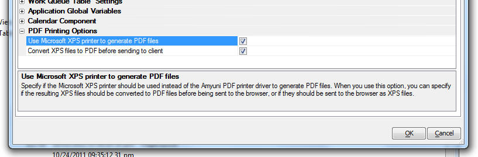
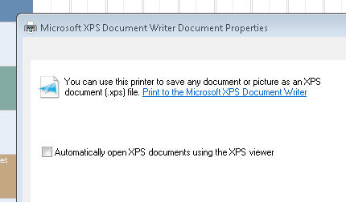

PDF Printing via Microsoft XPF Printer Driver Web Project Properties
When you print a report in a Web Application, the printing is done using the Amyuni Printer driver, which Alpha Software licenses from Amyuni. With this update, we are releasing another way to get PDF reports. You can now specify that you want to use the Microsoft XPS printer driver. This driver is typically automatically installed as part of Windows. If you use the Microsoft printer driver then Alpha Five will, by default (unless configured otherwise - see below), convert the resulting XPS file to a PDF file using the xps_to_pdf function.If you want to use the XPS printer driver you must specify so in the Web Project Properties dialog.

If you select to use the XPS printer, you have a second option to convert the resulting XPS files to PDF before sending them to the browser. If you choose not to convert to PDF, then the XPS file will be sent to the browser. Only Internet Explorer can open XPS files inline. Other browsers will typically download the XPS file and then open it with the associated XPS viewer on the client machine (if there is one).
When using the XPS printer you must go to the Printer Properties for the printer and make sure that the 'Automatically open XPS document using the XPS viewer' is not checked.

NOTE: If you make a change to a property in your Project Settings you will need to update the a5_application.a5i file on your server. This is done automatically whenever you publish any file to the server. You will therefore need to make one file in your project 'dirty' and then republish it. If you don't make the file dirty, Alpha Five will not publish any file, unless you have previously cleared out your Publishing History.